Calibración de Precisión
Cada tapa armónica se ajusta individualmente para lograr una respuesta sonora única.
Dato técnico
100% individual
Ninguna tapa recibe el mismo ajuste
Diseñamos y construimos instrumentos a medida para quienes buscan una pieza irrepetible, creada artesanalmente desde cero.
Las fábricas de producción masiva entregan clones perfectos pero sin alma, desprovistos de temperamento. En nuestro taller, cada instrumento nace con identidad propia.
«Creemos que ningún músico es igual a otro. Por eso cada instrumento se diseña y construye desde cero, convirtiendo cada proyecto en una pieza única e irrepetible.»
Creamos instrumentos que se convierten en una extensión de tu propia voz.
Cada tapa armónica se ajusta individualmente para lograr una respuesta sonora única.
Maderas curadas naturalmente para
garantizar estabilidad, durabilidad
y un sonido consistente.
Cada mástil se talla y calibra a mano para ofrecer mayor comodidad y reducir la fatiga.
Maderas de origen responsable y trazable, seleccionadas con compromiso ambiental.
La precisión guía cada etapa del proceso para que cada instrumento exprese el carácter único de su madera y de quien lo interpreta.
± 0,1 mm · precisión en cada etapaDiseño y construcción de
instrumentos de cuerda adaptados al
estilo de ejecución de cada intérprete.
Devolvemos vida a instrumentos que merecen seguir contando su historia, respetando siempre su esencia original.
Realizamos procesos de voicing y afinación tonal para optimizar su carácter tonal, equilibrio y proyección sonora.
Deslizá lateralmente →
Cada instrumento comienza con la elección de maderas cuidadosamente seleccionadas por su estabilidad, densidad y comportamiento acústico.
Definimos los objetivos junto al cliente y diseñamos cada detalle del instrumento para lograr una pieza única y personalizada.
Cada componente se trabaja, ajusta y ensambla manualmente para lograr una estructura sólida y precisa.
Esta etapa revela el carácter del instrumento, combinando acabados de alta calidad con una protección pensada para perdurar.
El instrumento se ajusta para revelar el potencial único de cada instrumento, optimizando su resonancia, equilibrio tonal y respuesta sonora.
Antes de su entrega, el instrumento se inspecciona, ajusta y prepara para ofrecer su mejor desempeño desde el primer acorde.
Dominá la construcción artesanal de una guitarra criolla desde cero.
Diseñá una guitarra eléctrica completamente personalizada.
Construí un violín artesanal mediante técnicas tradicionales de luthería.
Construí un bajo eléctrico con precisión, equilibrio y personalidad.
El progreso de tu obra, en tiempo real. Próximamente, cada cliente con un encargo en proceso tendrá acceso a un portal privado exclusivo: reportes semanales del luthier, galería de imágenes macro del varetaje y registros de audio de las pruebas de resonancia.
Un viaje íntimo que conecta tu expectativa con la precisión de nuestras gubias.
Próximamente · acceso privadoTap tone: golpe seco sobre la tapa aún libre para leer su frecuencia de resonancia (f₀ ≈ 340 Hz). Guía el rebaje del grosor y el ajuste de la barra armónica antes de cerrar la caja.
Cuando cada instrumento nace de una historia distinta, no existen dos iguales.

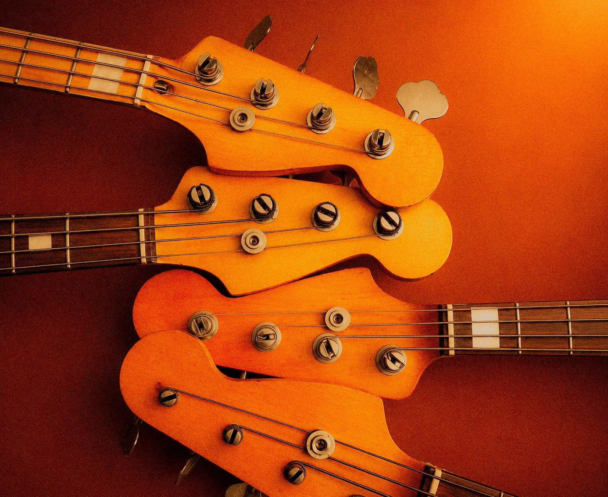
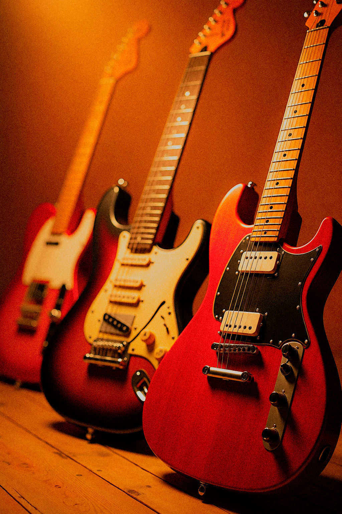
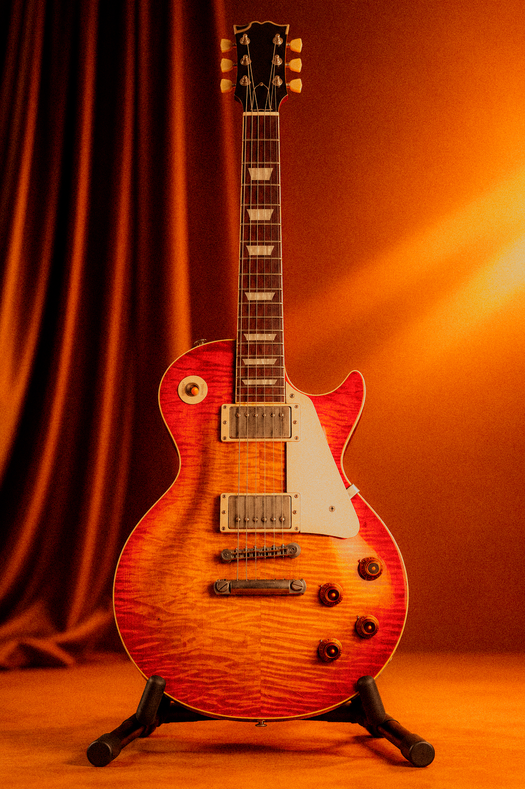

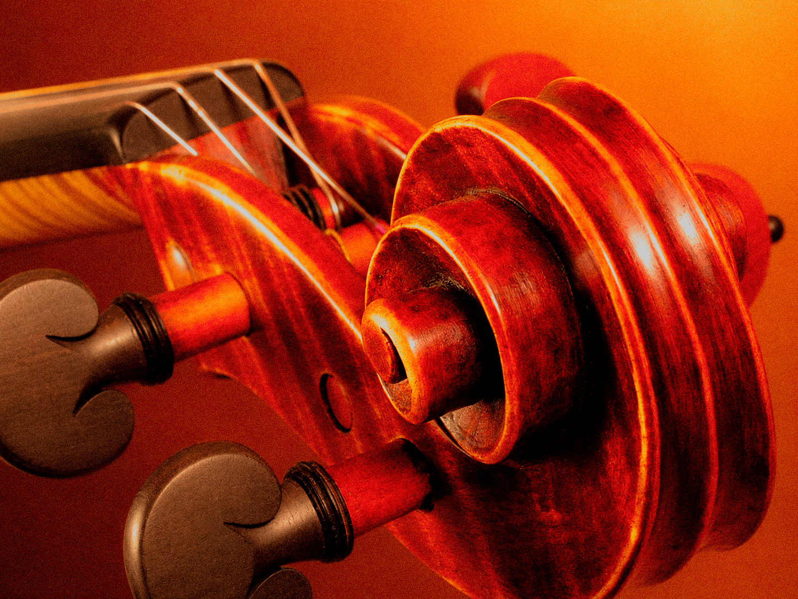
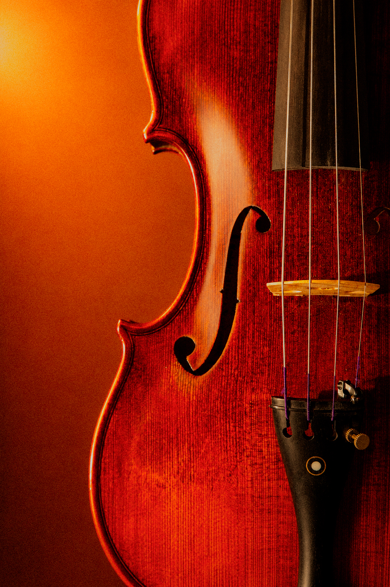
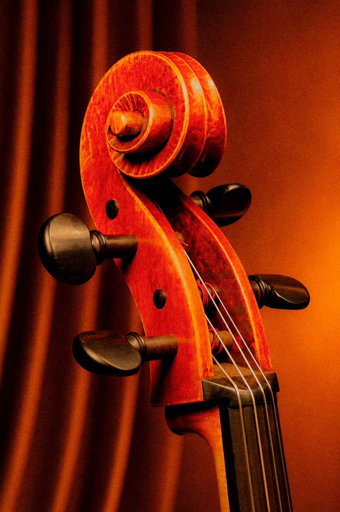
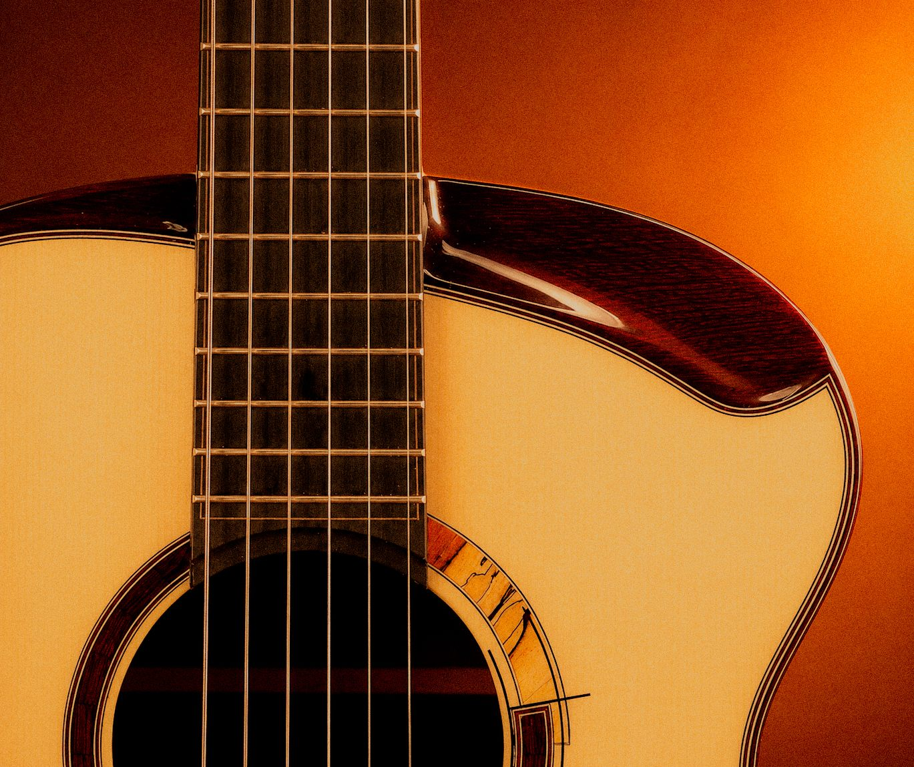

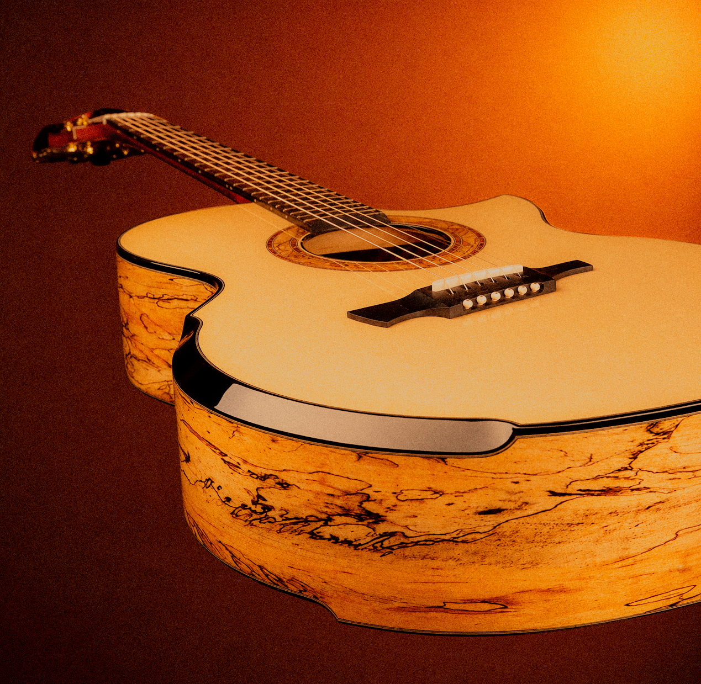
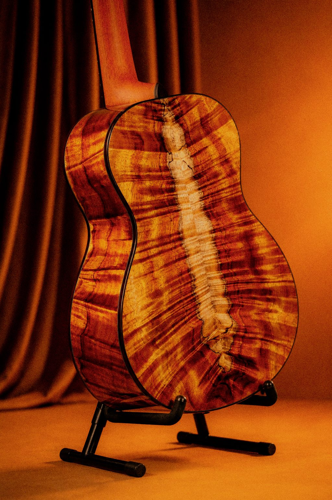
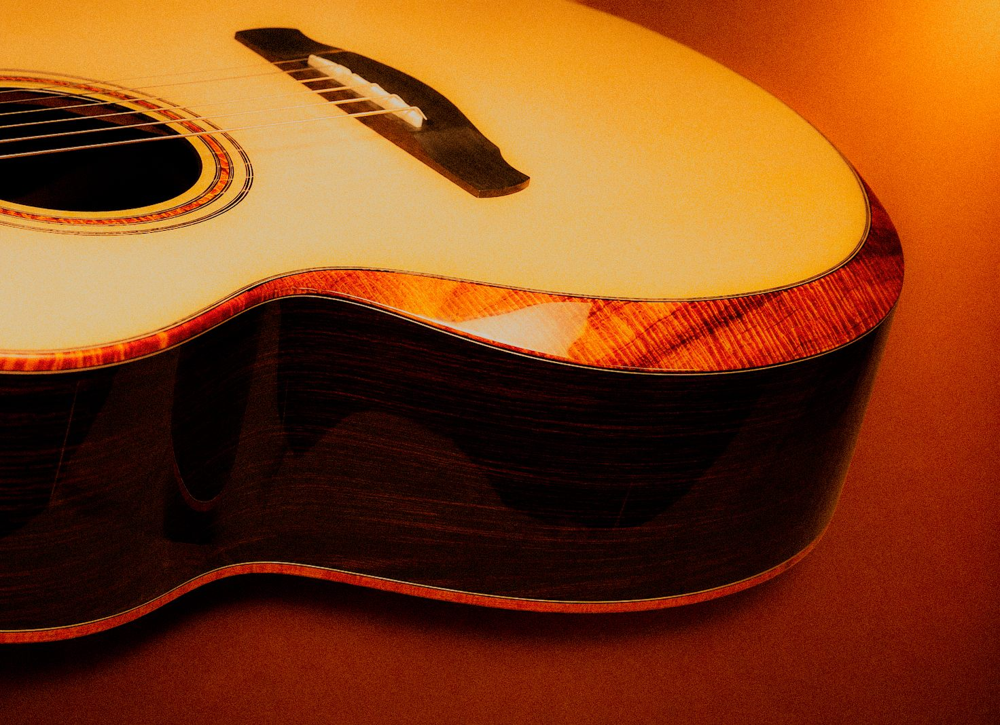
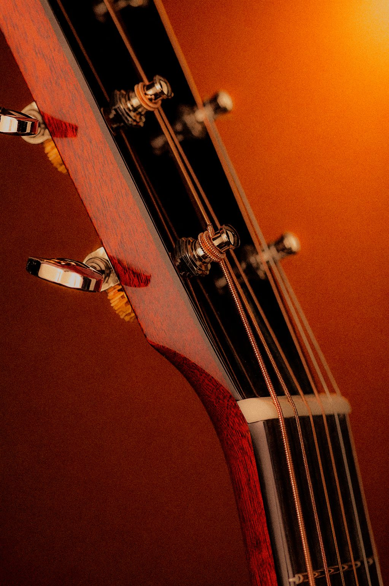
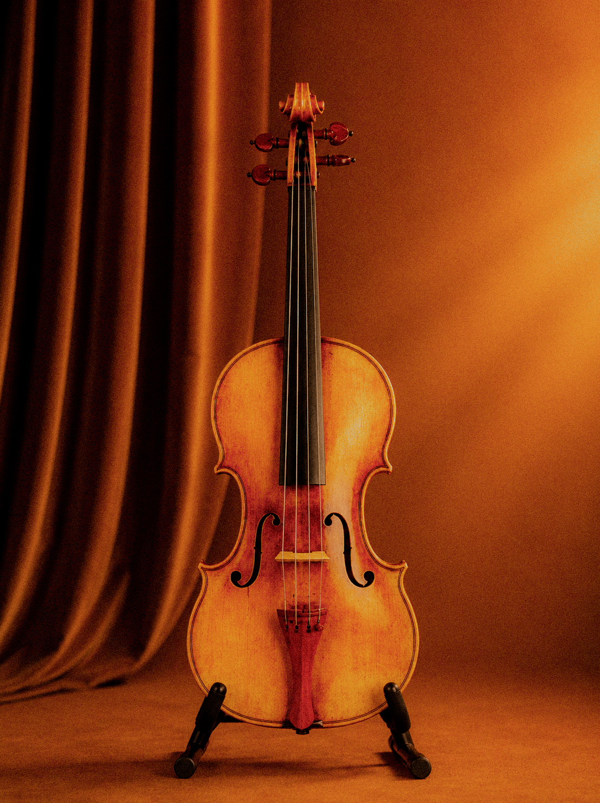
Depende del proyecto y del nivel de personalización, pero el proceso suele requerir entre tres y seis meses de trabajo artesanal.
Sí. Podés participar en la elección de maderas, terminaciones, medidas y distintos detalles de diseño.
Construimos instrumentos de cuerda de forma artesanal, desarrollados a medida según las necesidades, preferencias y estilo de cada músico.
Recomendamos realizar revisiones periódicas, mantener una correcta humedad ambiental y utilizar productos adecuados para conservar la madera y el acabado.
Sí. Restauramos instrumentos respetando su construcción original y recuperando su estabilidad, funcionalidad y carácter sonoro.
Sí. Es posible coordinar una visita para conocer el taller, el proceso de construcción y conversar sobre el proyecto.
Todos los instrumentos se envían en estuches termo-sellados con un sensor de humedad digital integrado. Las maderas, curadas de forma natural durante décadas, minimizan drásticamente su susceptibilidad a las variaciones higrométricas.
Sí. El luthier debe inspeccionar físicamente el bloque para verificar que el corte de la fibra sea perfectamente radial (quartersawn) y que su porcentaje de humedad interna sea inferior al ocho por ciento para garantizar su viabilidad estructural.
Iniciá una consulta con el maestro luthier, ya sea para conocer más sobre nuestros cursos o para encargar tu propio instrumento. Cupos limitados para la temporada en curso.